Вопросы
- Стеки. Абстрактный список
- Простые примеры использования абстрактного стека
- Реализация абстрактного стека
- Взаимосвязь между стеками и рекурсией
Абстрактный стек
- Разработка абстрактных типов данных в процессе решения задачи
- Две операции над абстрактным типом данных
- Алгоритм считывания и исправлений
Разработка абстрактных типов данных в процессе решения задачи
abcc←ddde←←←ef←fg, где ← Backspace, получится abcdefg.
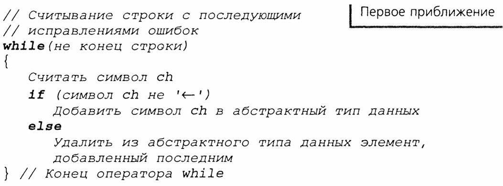
Две операции над абстрактным типом данных
- Добавление нового элемента в АТД
- Удаление из АТД элемента, введённого последним
Алгоритм считывания и исправлений
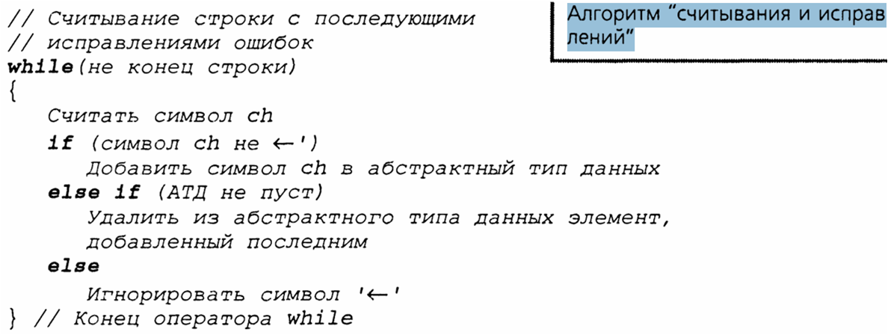
Новая операция над АТД
Определить, пуст ли АТД
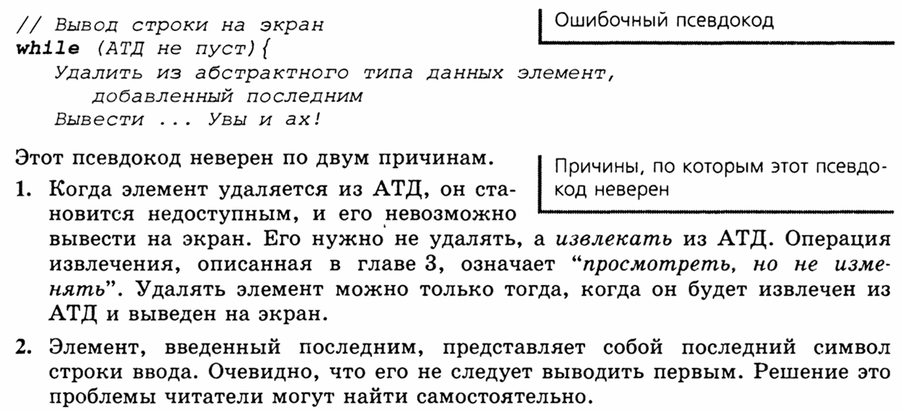
Алгоритм вывода строки, записанной в обратном порядке
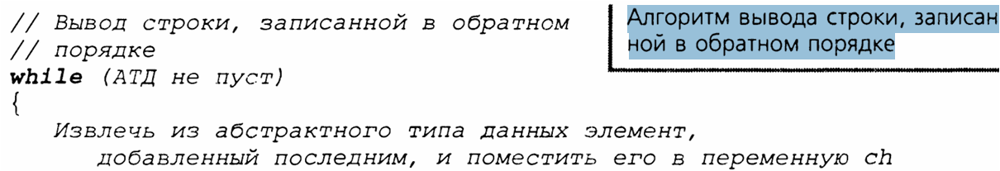
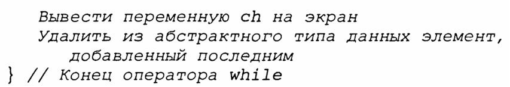
Ещё одна операция над АТД
- Извлечь из абстрактного типа данных элемент, добавленный последним
Основные понятия операции над абстрактным стеком
- Создание пустого стека
- Уничтожение стека
- Определение, пуст ли стек
- Добавление в стек нового элемента
- Удаление из стека элемента, добавленного последним
- Извлечение из стека элемента, добавленного последним
Стек
Обладает одной особенностью — элемент, помещённый в стек последним, удаляется из него первым. Данное свойство часто называют принципом «Последним вошёл — первым вышел» — или просто LIFO (Last in, first out).
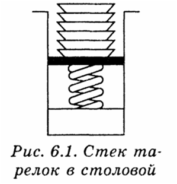
Операции над элементами стека
- Извлечь из стека элемент, вставленный в него последним
- Удалить из стека элемент, вставленный в него последним
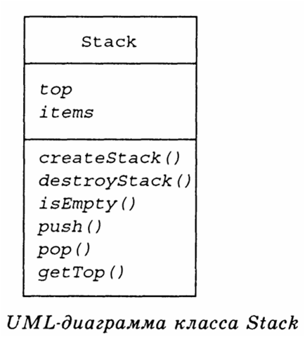
Операции над элементами стека
- Извлечь из стека элемент, вставленный в него последним
- Удалить из стека элемент, вставленный в него последним
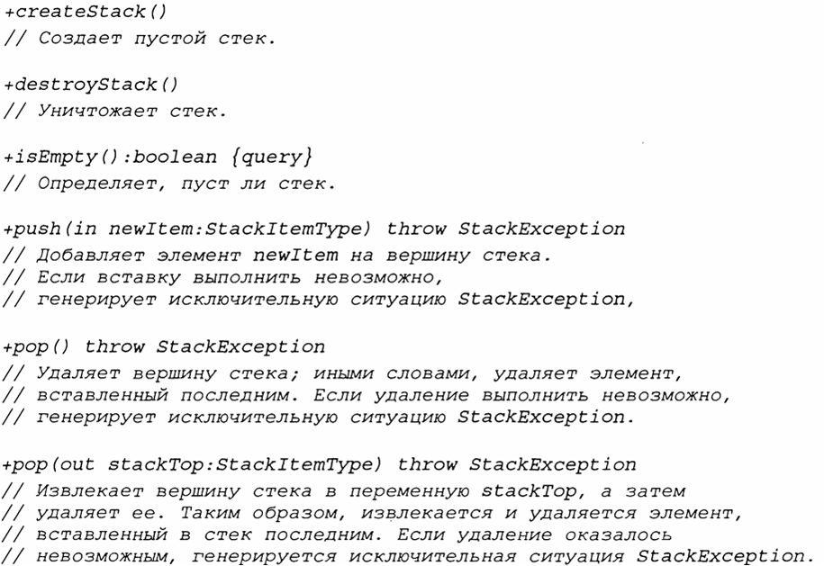
Псевдокод операций над абстрактным стеком

Применение абстрактного стека
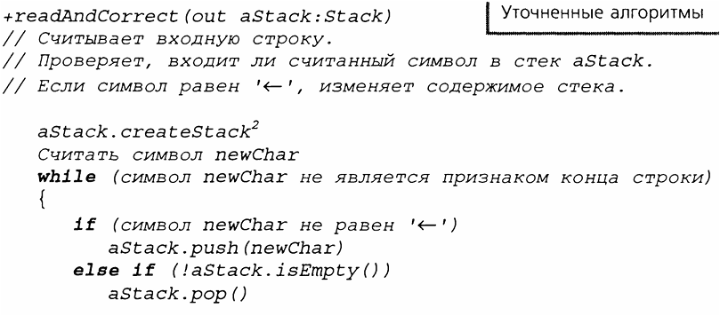
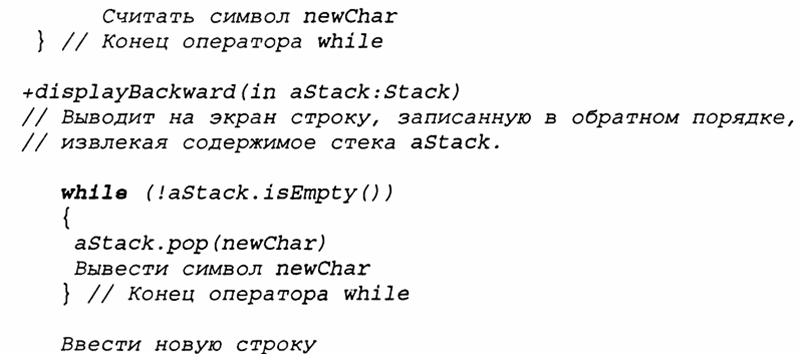
Вопросы, оставленные без ответа неформальными спецификациями
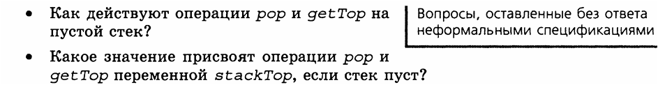
Аксиомы
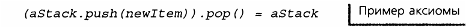
Если новый элемент заталкивается в стек, а затем из него выталкивается, стек не изменяется.
Простые примеры использования абстракного стека
Проверка баланса фигурных скобок
Баланс соблюдён, если выполняются два условия
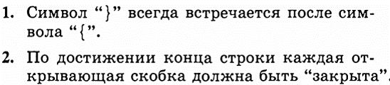
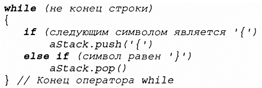
Псевдокод решения, включающий проверку баланса скобок
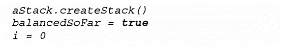
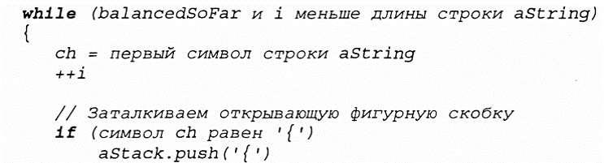
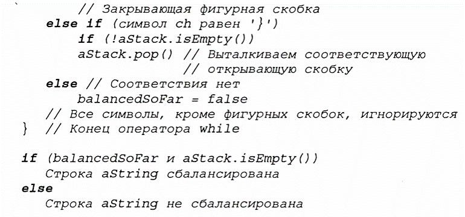